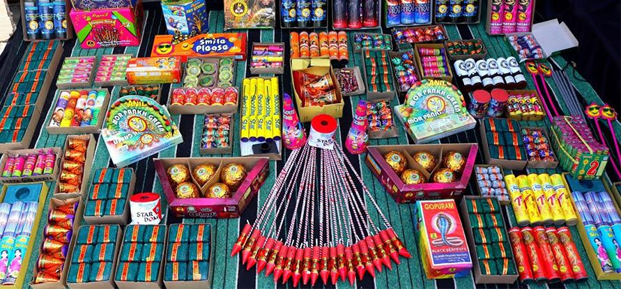
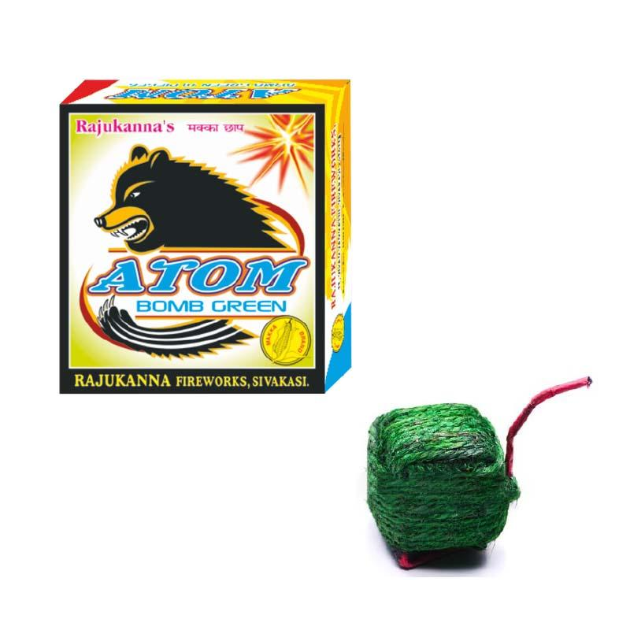
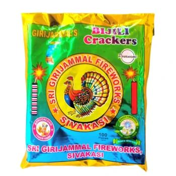
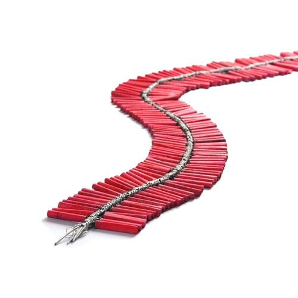
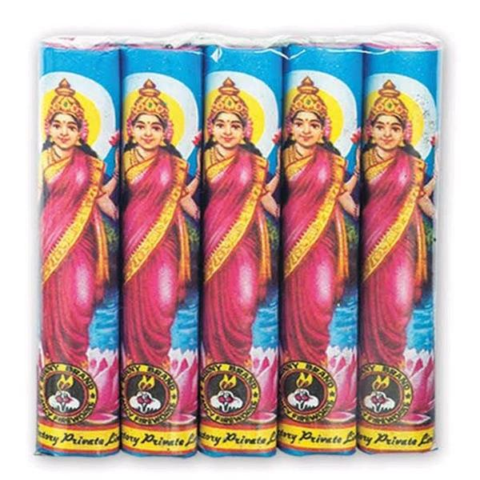
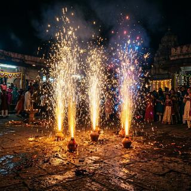
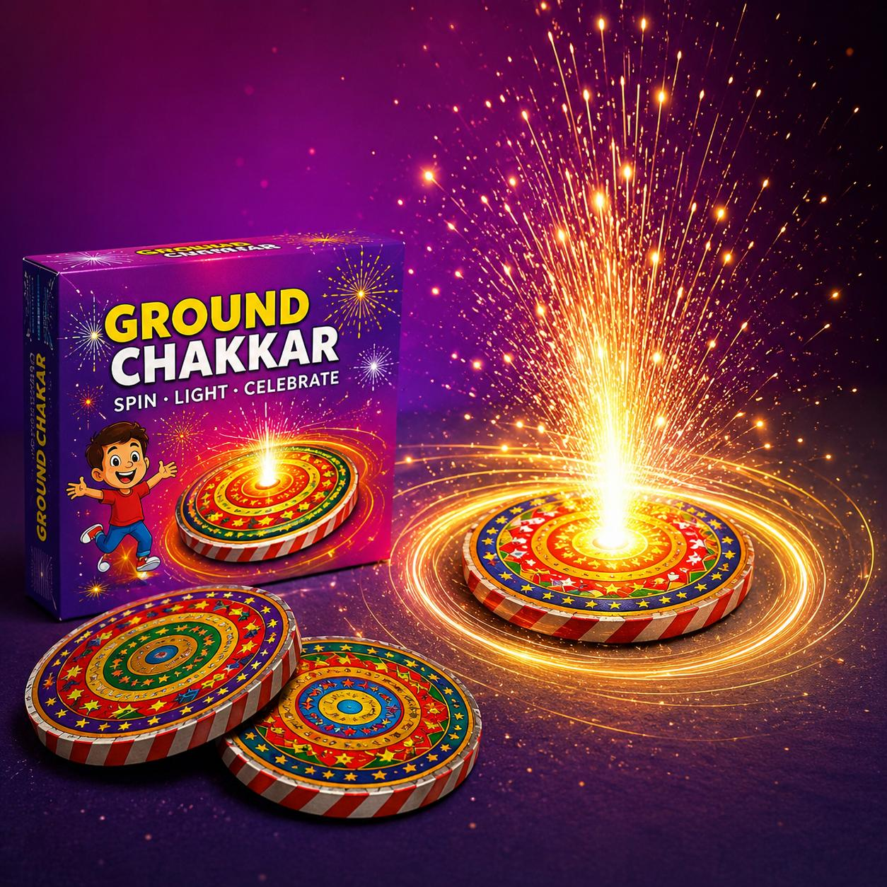
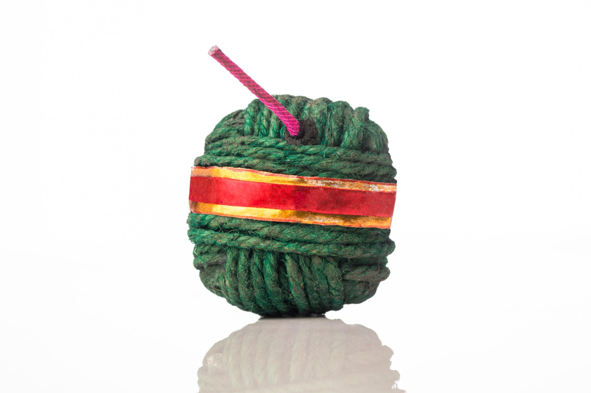
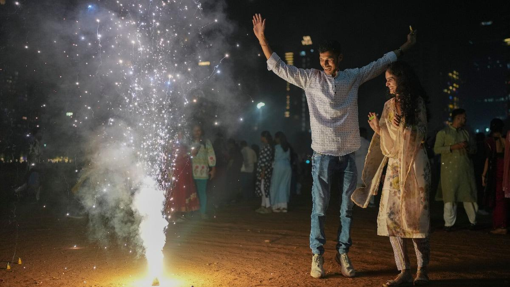

Types of Crackers

Sivakasi is famous for producing a wide variety of fireworks that add colour, sound and excitement to festivals and celebrations.
Crackers can be broadly experienced as daytime crackers and nighttime crackers. Some are known for their sound, while others are popular for their sparkling visual effects.
☀️ Daytime Crackers
Daytime crackers are generally known for their sound effects. They are commonly associated with traditional festive celebrations.
1. Anu Kundu

Anu Kundu is a small traditional cracker enjoyed during festive occasions. It is one of the familiar varieties seen during celebrations.
It is known for its popping sound and traditional festive appeal.
🔊 Sound & Safety Alert
Sound: Popping sound.
Safety: Small children should never handle crackers. Loud sounds may frighten children, elderly people and pets.
2. Chini Vedi

Chini Vedi is a traditional small cracker known for its compact size and popping sound. It is a familiar part of festive cracker collections.
Its sound adds a simple and traditional feel to celebrations.
🔊 Sound & Safety Alert
Sound: Sharp popping sound.
Safety: Keep children, elderly people and pets away from noisy crackers. Always maintain a safe distance.
3. Saram

Saram is a series of crackers connected together to create repeated sounds. It is popular among people who enjoy continuous cracking sounds during festivals.
The series produces repeated bursts of sound as part of the celebration.
🔊 Sound & Safety Alert
Sound: Repeated cracking sounds.
Safety: Series crackers may produce loud sounds. Children should stay away, and the noise may disturb pets and people nearby.
4. Lakshmi Vedi

Lakshmi Vedi is a traditional cracker commonly associated with Diwali celebrations. It is known for its loud bursting sound and festive popularity.
It has been a familiar cracker in many households during festival seasons.
🔊 Sound & Safety Alert
Sound: Loud bursting sound.
Safety: Children should not handle crackers. Follow the instructions printed on the product and keep spectators at a safe distance.
🌙 Nighttime Crackers
Nighttime crackers are popular for their colourful sparks, bright lights and visual effects that can be seen in the night sky.
5. Kambi Mathappu
Kambi Mathappu is a popular sparkling firework that produces bright sparks. It is commonly associated with festive celebrations and colourful moments.
Its sparkling effect makes it visually attractive during celebrations.
✨ Sound & Safety Alert
Sound: Low sound with sparkling effects.
Safety: Sparks can cause burns. Children should not hold or handle fireworks. Adult supervision and safe distance are essential.
6. Pushvanam

Pushvanam is known for its fountain-like effect, producing a shower of sparks during celebrations.
Its sparkling appearance creates an attractive visual effect, especially during nighttime festivals.
✨ Sound & Safety Alert
Sound: Crackling sounds with sparkling effects.
Safety: The sparks and heat can be dangerous. Children should stay away, and spectators must maintain a safe distance.
7. Sangu Chakkaram

Sangu Chakkaram is a traditional spinning firework known for its circular movement and sparkling effects.
Its spinning motion and bright sparks make it a familiar sight during festive celebrations.
✨ Sound & Safety Alert
Sound: Spinning and crackling sounds.
Safety: Its movement may be unpredictable. Children should never handle it. Keep people away from the area.
8. Atom

Atom is a traditional sound cracker associated with festive celebrations. It is popular among people who enjoy crackers with loud bursting sounds.
Its loud sound is one of its characteristic features.
🔊 Sound & Safety Alert
Sound: Loud explosive sound.
Safety: Loud sounds may frighten children, elderly people and pets. Children must not handle crackers.
🛡️ Fireworks Safety Awareness

Fireworks are part of celebrations, but safety should always come first. Responsible celebration helps protect everyone from injuries and accidents.
Important Safety Rules
- Children should never handle or light crackers.
- Adult supervision is essential.
- Maintain a safe distance from fireworks.
- Never stand close to crackers that have already been lit.
- Avoid lighting crackers near animals, buildings or vehicles.
- Follow the safety instructions printed on the product.
- Avoid excessive noise and respect elderly people and pets.